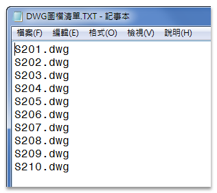
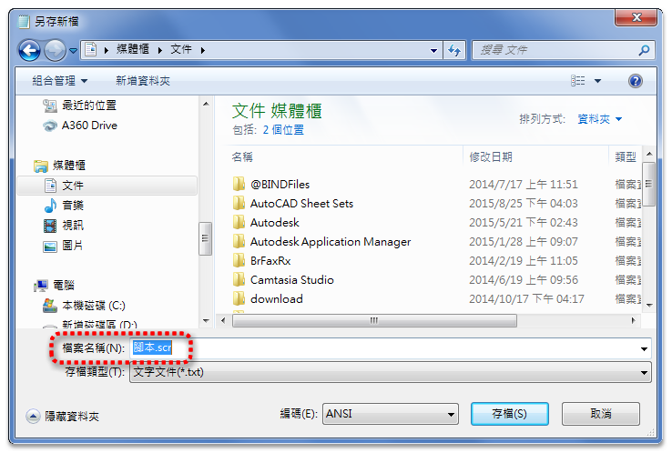
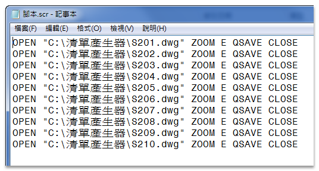
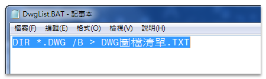
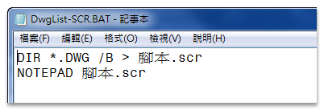
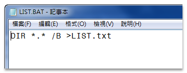

大家好：
關於圖面中的任何批次處理作業，一般可以透過「SCR腳本檔」完成作業，這是我早期最喜歡用的工具之一！
通常可用來批次出圖，如果有檔案要批次「置換圖框」或「關閉圖層」等等，如果還不會寫「LISP程式」，「SCR腳本檔」將是一個很棒的選擇～
以下分為三個部分跟各位分享，有不同的方式歡迎提出一同討論一起進步喔～
1.執行批次處理SCR腳本
2.產生圖檔TXT清單方式
3.分享BAT批次檔
一、早期寫腳本檔的時候，常常需要DWG檔案的「圖檔清單」，然後即可寫出批次處理的腳本。

通常使用windows「記事本」儲存檔案時，一般文字檔案的副檔名稱為「.txt」。
使用者只要副檔案名稱加上「.scr」，即可儲存成腳本檔檔案格式。

註：也可以直接將副檔名稱「.txt」更名為「.scr」。
例如：我想要開啟「S201.DWG ～ S210.DWG」，再把圖面視窗設置「實際範圍(ZOOM指令 > E選項)」，最後「存檔關閉DWG圖檔」。

▼腳本檔(SCR)語法說明:
OPEN = 開啟圖檔指令
"C:\清單產生器\S201.dwg" = 圖檔位置
ZOOM E = ZOOM指令/實際範圍(E)
QSAVE = 儲存圖檔
CLOSE = 關閉圖檔
註：空隔表示Enter(執行)。
再來只要製作好「SCR腳本」之後，即可在AutoCAD輸入「SCRRIPT指令」執行腳本檔，完成批次處理作業。
註：圖檔清單中的dwg檔案記得先關閉，再開啟一張空白圖檔(NEW)執行。
▼影片展示:
二、產生「圖檔清單」方式，一般最快的方式可以透過LISP程式，如果沒有LISP程式，可以透過以下「BAT檔」方式，簡單製作「圖檔清單」。

註：也可以直接將副檔名稱「.txt」更名為「.BAT」批次檔。
然後再把「圖檔清單.TXT」依腳本檔(SCR)語法，編輯製作為「批次處理的腳本.SCR」。
▼影片展示:
三、分享三種「.BAT」批次檔，分別為產生「圖檔清單(DwgList.BAT)」、「圖檔清單腳本(DwgList-SCR.BAT)」及「資料夾所有內容(LIST.BAT)」。



▼影片展示:
▼BAT批次檔下載：
https://app.box.com/s/3ybkkmiaee60jhgguvszcwnaz119q37w
▼配置空間實際畫面BAT檔下載：
https://app.box.com/s/ni6em4uhz52d4v5cd17tputf3wee2mcy
▼[專屬分享]WBLOCK清圖腳本&配置空間實際畫面BAT檔 (專屬B獨享)：
https://www.autocad-tw.com/t26036-topic